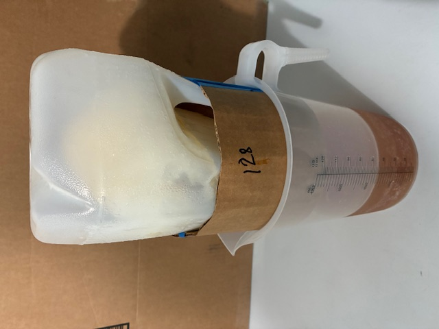
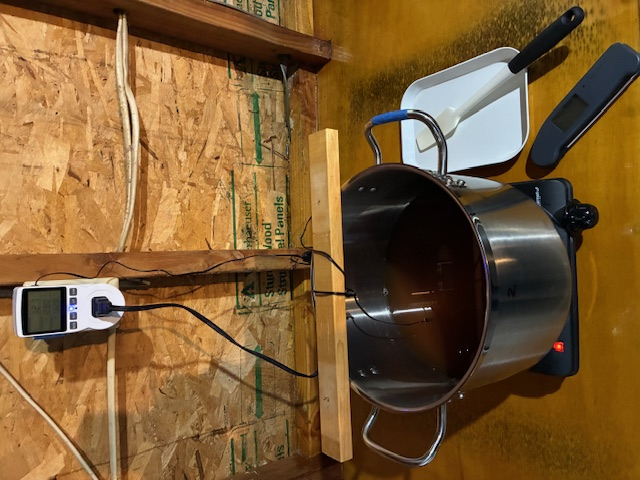

Please do not view these web pages as specific "how to" instructions. Instead, treat them as a base from which you can build your own cider-making and pasteurization methods, and adapt the steps outlined below to your own circumstances. I've developed this process using equipment already available to me; you'll probably want to make modifications for your equipment and your particular requirements.
Because pasteurization at home is inherently dangerous (see the disclaimer below), you must accept and minimize your risk. Just because I have been (so far) successful in the steps that I describe below doesn't mean that you will be successful in your interpretation and execution of these steps. I welcome any feedback on how to improve these methods or instructions.
The method I use for making sweetened hard cider was developed from the ideas explained in a Brülosophy post on how to make hard cider. The process described there uses store-bought juice and frozen juice concentrate. It's a very simple and effective method. My method is not simple, but it is also effective.
I have access to hundreds of pounds of free apples and pears each year that I hate to see go to waste, and so my process starts with the fruit harvest. My first step is to juice the collected apples and pears. My fruit crusher is a (brand-new for this task) garbage disposal, but I've also heard of using a garden shredder. (The garden shredder might be a better option in that it may not require chopping the fruit before crushing, but there are some reports of a metalic taste when using a shredder.) My homemade car-jack fruit press (pictures below) is loosely based on designs from instructables.com, growforagecookferment.com, jamieoliver.com, and la-darnoire.com. One important point in addition to the use of four-by-four lumber on the top and bottom is a metal plate (I've actually used two metal plates) on the bottom of the top four-by-four to prevent the car jack from just pushing a hole into the wood. The generous use of lag bolts and cross pieces also helps to keep the whole thing in one piece. Although it does creak under strain and the top piece of wood appears to have developed a bend, it has held up to pressing more than 100 gallons (375 L) of juice and appears to be in shape for years to come.
We chop the fruit into halves or quarters and put it into the disposal for crushing (or mushing). The disposal is attached to an aluminum sink that is clamped to nearby things for stability and to get just the right height. A wooden rod with a cross piece that prevents the rod from touching the blades helps to push the fruit from the sink into the disposal. (An unpainted wooden broom handle, cut to size and with a dowel cross piece, works very well.) The very unattractive crushed fruit mush goes into a five-gallon (19-L) bucket double-lined with two coarse-mesh bags (dimensions of each: 20" x 26" or 50cm x 66cm). When the bucket is nearly full, I pull up on the mesh bags and transfer the pulp to the press. The press uses a 5-gallon aluminum pot with the bottom removed to hold the pulp and an 11⅝" (29.5 cm) diameter circle of reinforced plywood for the 4-ton (3.6 metric ton) car jack to press on. The pot (now more of an aluminum tube) has a number of small holes on the side, drilled at an angle to encourage juice to flow down the side. A thick plastic cutting board, with grooves cut into it with a router, sits below the aluminium pot (or tube) and channels the juice through a hole at the bottom of the press and into a 21-quart (20-L) enamel stock pot that sits below the press. Some juice comes up on top of the plywood circle, and that can be transfered to the stock pot using a turkey baster. Although this setup is sturdy and effective, it might not have been worth the effort to make. (Removing the bottom from an aluminum pot is something I don't ever want to do again, but the circular shape is very good at distributing pressure evenly and preventing the mesh bags from rupturing.) A 5G (19L) plastic bucket might work just as well as an aluminum pot, but it might not be strong enough, and the diameter is usually slightly different at top and bottom. Your local homebrew supply store may rent fruit crushers and cider presses, which would be far easier than building your own.
To make a five-gallon (19 L) batch of cider, I usually aim to collect about 90 pounds (41 kg) of apples for the cider and 40 to 55 lbs (18 to 25 kg) of ready but unripe pears for syrup. (If pears are ripe enough for eating, they turn into a soggy mess in the press and the yield of juice is very low. Firm, unripe pears are much better for pressing.) The 90 pounds of apples becomes about 6.25 gallons of apple juice, and the 40 to 55 pounds of pears becomes about 2.5 to 3.5 gallons (9.5 to 13.25 L) of pear juice. (The amount of pear juice needed depends on the method of making syrup, as explained below.) Immediately after juicing I add 0.5 grams per gallon (0.13 g/L) of potassium metabisulfite, which (a) reduces the population of wild yeast and (b) removes dissolved oxygen and keeps the color bright. I also add ½ teaspoons per gallon (⅛ tsp/L) of pectic enzyme to reduce the cloudiness. I let the containers of juice sit overnight at room temperature so that the pectic enzyme can work; spontaneous fermentation by wild yeast is held at bay by the potassium metabisulfite.
The next morning I decant the clear juice, getting about 85% to 90% of the initial volume. (The type of container that the juice is stored in has a big impact on how much clear juice can be decanted. A 5-gallon pot is not nearly as effective as a 5-gallon plastic carboy with a small opening.) Focusing on the approximately 5.5 gallons (21 L, after decanting) of apple juice for the cider, I adjust the pH to between 3.3 and 3.8 using malic acid, although often the juice is already in this range. Then I apply a heat treatment, bringing the apple juice to about 185°F (85°C) for one hour to sterilize it and increase the concentration of sugars by evaporation. During the heat treatment I add some yeast nutrient. The juice remains clear even after the heat treatment because of the lack of pectins. I then cool the remaining volume of about 5.25 gallons (20 L) with a wort chiller, transfer that to a cleaned and sanitized carboy, pitch the yeast, and apply an airlock. (I currently use SafCider AC-4 yeast.) After a day or two I add a different yeast nutrient (which should be added after one-third sugar depletion) to help fermentation. There is a risk of foam overflowing the carboy; adding two capsules of simethicone (sold over the counter at the drugstore to relieve bloating) usually solves that problem.
The apple cider ferments for about two months, and I rack the cider off of the sediment after the first month. (Fermentation may not require two months, but I've heard that cider yeast is more like wine yeast and that a long fermentation is beneficial.) After racking, I blanket the carboy with CO2, although this may not be necessary. The result after two months is about 5 gallons of perfectly clear, lightly fruity, and bone-dry cider that I find undrinkable because of the dryness, even when it's chilled and carbonated.
When the cider has finished fermenting, I add a half-teaspoon of potassium metabisulfite (3.5 g or about 100 ppm in 5 gallons/19L), and after another 48 hours I add 2.5 teaspoons (5 g) of potassium sorbate. This combination stops any further fermentation by cider yeast, bacteria, and/or wild yeast. Both potassium metabisulfite and potassium sorbate degrade over time, so I buy fresh packages each year. I also blanket the carboy with CO2 after each exposure to oxygen. I then wait a few days to ensure that there is no activity in the airlock. (There is often negative pressure in the airlock due to temperature changes in the room.) After confirming a lack of airlock activity, I pour the syrup (described below) into the cider and use a sanitized mix-stir agitator rod (attached to a drill) to thoroughly mix the syrup into the cider. I then blanket the cider with CO2 and wait a few more days to make sure that there is still no airlock activity. If any is detected, I add some more potassium metabisulfite and potassium sorbate and re-monitor for several days. Once I've confirmed that there is no airlock activity, the cider is ready for carbonation, pasteurization, and bottling.
After the initial juicing step, while the 6.25 gallons (24 L) of apple juice is reserved for cider, I turn the 2.5 to 3.5 gallons (9.5 to 13.25 L) of pear juice into syrup. This juice gets the same immediate treatment with potassium metabisulfite and pectic enzyme, and the same decanting of clear juice the next day. I then keep the approximately 2 to 3 gallons (7.5 to 11.25 L) of clear pear juice at close to freezing until I'm ready to condense it into syrup. If I use canning techniques, I can store the syrup for months at room temperature. Otherwise, I store the syrup in the freezer until I've stopped cider fermentation and confirmed a lack of fermentation activity, at which point I pasteurize it just before adding it to the cider.
I've used two methods (described in more detail below) to make a fruit syrup which provides both flavor and sweetness to the cider. In the first method, I simply boil the juice down to concentrate it. In the second method, I repeatedly freeze and then collect 80% of the juice, which increases the concentration of sugars and flavors with each repetition. The first method requires less juice (about 2 gallons or 7.5 L), and in 5 or 6 hours the juice can be concentrated to 15% of its initial volume. The disadvantage is that the flavor is more of a "cooked pear" flavor than a "fresh pear" flavor. The second method requires more juice (almost 3 gallons or 11 L) and 8 to 10 days of continuous monitoring (during the daytime) of volume in order to reduce it to 17% of its initial volume. The advantage is that the fresh pear flavor is preserved, even after pasteurizing the syrup at 130°F (55°C) for one hour. I prefer the second method, but both yield very good results.
Making Syrup By Boiling: In the first method, I boil the juice in a pot with a large ratio of surface area to volume, in other words a pot with a large diameter. I also simultaneously use two 2-gallon (7.5-L) pots with one gallon (3.75 L) of juice each, and two electic hot plates, to speed up the process. (Before heating the juice, I add the target volume of 20 oz (590 ml) of water to the pot and mark this volume with a measuring stick. I then know when the syrup has reached the target volume by comparing the syrup volume with the mark on the measuring stick.) During the boil, I keep a fan blowing across the surface to encourage evaporation. The large surface area (relative to volume) helps the water evaporate quickly and the remainder is condensed into a sweet syrup. With a pot 9.5" (24 cm) in diameter, one gallon (3.75 L) of juice takes about 5 hours to reduce to 20 oz (590 ml) of syrup with a specific gravity of 65 to 70 degress Plato (measured with a digital refractometer, although this measurement is optional). I store the 40 oz (1.18 L) of syrup (from two gallons of juice) in three 16-oz (500 ml) canning jars. I use standard water-bath canning techniques (no added acid or pectin) to make the syrup "shelf stable" until I'm ready to add it to the cider. If you make the syrup just before adding it to the cider, canning won't be necessary.
Making Syrup by Freezing: In the second method, I store the three gallons (11.35 L) of juice in three containers. (A one-gallon (3.75-L) container won't actually hold one gallon (3.75 L) of juice when frozen; the juice will expand and leak into the freezer. It's important to have each container only about 90% full to prevent leaks.) Each container has a narrow opening. Once completely frozen, I then start a cycle of repeatedly defrosting and re-freezing the juice. The defrosting happens with the container upside down and dripping from the narrow opening into a one-gallon (3.75-L) measuring cup. (See picture, below.) I have three of these large measuring cups, and so I am able to do this simultaneously for all three gallons (11 L). At each defrosting, I collect 80% of the current volume. So with an initial volume of 115 oz (3.4 L), I collect only 92 oz (2.72 L) and discard the remaining ice. (The first defrosting usually requires two days). Then the 92 oz (2.72 L) of frozen juice is defrosted to collect 74 oz (2.19 L). This volume of juice is frozen and then defrosted to collect 59 oz (1.74 L) (73.6 oz × 0.80 = 58.88). This process is repeated for a total of eight defrostings, yielding a final volume of 19.3 oz (0.57 L), or 17% of the initial volume. I start with 90% of 3 gallons, or 2.7 gallons (10.2 L), instead of 2 gallons (7.6 L) with the boiling method, because some sugar is lost in the discarded ice, and we end up with a syrup that is not quite as sweet (about 50°P instead of 68°P). More volume is therefore required in order to add the same level of sweetness to the cider. This syrup has never been subjected to heat and therefore preserves (and concentrates) the fruit flavor, but it may also preserve spoilage organisms. I therefore hold the syrup at 130°F (55°C) for one hour to pasteurize it (yielding 10 PUs with z=6.94 and Tref=60), and add the hot syrup immediately and directly into the (fermentation-stopped) cider. A picture below shows the syrup being held at the target temperature using a temperature controller (KETOTEK Digital Thermostat Outlet Plug Temperature Controller) wrapped around a wooden stick resting on the pot (to keep the thermometer probe at the right height). I target 130°F (55°C) because this temperature should reduce the population of L. fructivorans, while still preserving the fruit flavor (El Gamal, Song, Rayan, et al., "Thermal Degradation of Bioactive Compounds during Drying Process of Horticultural and Agronomic Products: A Comprehensive Review", in Agronomy, 13, 1580, 2023).
At this point, I've produced more than five gallons of a sweet, fruity, but uncarbonated hard cider. If you use the process described in the Brülosophy post, you can reach the same point with far less effort.
 
I use a 5-gallon (19-L) Corny keg to carbonate and bottle the cider. Bottling is an optional step, but I don't have enough room in my keg refrigerator to keep this keg there all year, and I like to give bottles of cider to friends.
To carbonate the cider I first rack it into my (sanitized) keg and purge air out of the small amount of remaining headspace with CO2. I put this keg into my keg refrigerator, and when it's cold (35°F or 2°C) I connect the CO2 line and hold it at 10 PSI for a week, shaking the keg twice every day. You could carbonate the cider at room temperature using more pressure and a longer carbonation time.
When the cider is nicely bubbly, it's time for bottling. My process is the same as when bottling beer from a keg. I connect the keg output line to a bottling wand (I use the "ProFiller" from Fermtech, currently about $14), and push a drilled rubber stopper near the top of the bottling wand so that the stopper pushes against the top of the bottle. Pressure in the bottle can be slowly released (allowing liquid in) by gentle venting from the stopper. I release all pressure from the keg and then set the pressure to about 0.5 PSI, as low as possible while still forcing cider out of the keg. The low pressure prevents foaming, and using the stopper to vent air allows for a slow, controlled fill. I use the bottling wand to add cider to each sanitized bottle, and then cap the bottles with sanitized caps. This yields about 48 to 50 bottles of cider.
If you don't have a keg for carbonating, or if you don't want to use chemical treatment to stop fermentation, you could try not adding any potassium sulfite or potassium sorbate to the hard cider, adding the syrup to the cider along with some fresh yeast, stirring and bottling this immediately, and letting it carbonate in the bottles. Then, pasteurize the bottles when they've reached the appropriate level of carbonation (after maybe a few days, as determined by opening a bottle and tasting it), which should stop further fermentation. I haven't tried this because I think it's too risky to rely on only heat treatment to prevent bottle bombs. However, others have used this method successfully, pasteurizing by bringing the temperature of the cider in the bottle up to 165°F (74°C) for 10 minutes. If you do try this, please be careful that the bottles have sufficient head space and aren't over-carbonated before pasteurization.
You could trust the potassium metabisulfite and potassium sorbate in the cider to prevent further fermentation while it sits in bottles, but I don't like to take any chance that the bottles I give to friends might explode in their face. So, I use both chemical and heat treatment (pasteurization) to ensure that the bottles remain shelf stable. So far (knock on wood), there haven't yet been any problems with my bottled cider, even after several years of storage. If you're not familiar with how pasteurization works and how pasteurization units (PUs) are computed, I have an explanation here. The method I use for pasteurizing the bottles is based on a number of sources, listed below.
There doesn't seem to be a standard target PU level for pasteurizing cider; some commercial operations target 10 to 25 PUs, while others cite 60 PUs. At the other extreme, an evaluation of hard cider found that two species of yeast were reduced to undetectable levels with just 1 PU using a z value of 6.94. The primary disadvantage of higher PU levels is said to be an adverse effect on flavor. (A second potential disadvantage is in heating the cider to a temperature that is so high that the bottles explode from the pressure of the hot carbon dioxide.) A few years ago, my wife and I tried two samples of the same hard cider (made with a syrup produced using the boiling method), one bottle of which was pasteurized at a peak temperature of 158°F (70°C) with much more than 100 PUs, and the other left unpasteurized. We could both detect a difference in the flavor, but neither of us had a preference one way or the other. Recently, we repeated this informal experiment with cider made with a syrup produced using the freezing method. The pasteurized cider had about 350 PUs. My wife was unable to detect any difference in flavor; I thought that I could tell a slight difference, but it was very subtle and I had no preference between the two bottles. Because the model of pasteurization relies on computing PUs using many uncertain conditions (thermometer placement when recording temperatures, the types of spoilage microbes in the cider, the amount of live yeast left in the cider, the z value and minimum temperature used in the model, thermometer accuracy, etc.), I aim for a peak temperature of about 158°F (70°C) and well more than 50 PUs when I pasteurize, using a z value of 6.94 and minimum temperature of 55°C, in order to have a margin of safety. If I were to not use potassium metabisulfite and potassium sorbate to kill the yeast, I'd probably follow the recommendation noted above, of 165°F (74°C) for 10 minutes, which yields more than 1000 PUs, because the amount of live yeast initially in the bottle will be relatively large.
The basic idea of this batch pasteurization method is to gently warm the bottles to about 120°F (50°C) in order to minimize the thermal shock when putting them in hot water at 185°F (85°C). While the bottles are held in the hot water, their internal temperature increases while the hot-water temperature decreases. Ideally, the cider in the bottles will reach the pasteurization target temperature. Once that has been reached for a minute or two (depending on the target PUs), they are removed from the hot water and allowed to cool. The bottles still accumulate PUs as they cool down.
The details of my process for pasteurizing the 48 to 50 bottles of cider are described in the following steps. Note that the steps will be overlapping between batches. For example, I'll still be processing batch 1 in Step 4 after starting batch 2 in Step 3. This makes for a busy but productive time.
Step 1. First, I create two test bottles filled with room-temperature water (leaving the same headspace as the bottles of cider) and plugged with a cork that has a small hole through the middle. (I find that corks from The Balvenie whiskey work perfectly in my cider bottles.) I put one Thermoworks EXEC thermometer through each hole, so that the temperature probe ends up in the middle of the bottle. These test bottles will be used to estimate the temperature in the bottles of cider. Then I fill a 21-quart (20-L) enamel stock pot with 3.5 gallons (13.25 L) of hot water and put the probe of a Thermopro meat thermometer into the water. I start heating this pot of water on the stove to a target temperature of 185°F (85°C) with the lid on. I take a second 21-quart (20 L) enamel stock pot and fill that with 3.5 gallons (13.25 L) of 130°F (54°C) water. This pot stays in my sink. The volume of 3.5 gallons (13.25 L) submerges the bottles so that only the headspace and cap are above the waterline. Then, I take a 9-quart (8.5 L) pot and heat 3.5 quarts (3.5 L) to a boil (with the lid on). Once it's hot, I maintain the boil with a very low heat. I then put on protective gear in case of any shattering or exploding bottles. I add 10 bottles of cider, and then one test bottle, to the warm (130°F or 54°C) water. At this point, I start recording the time and temperature of the test bottle every few minutes.
Step 2. When the pot of hot water has reached the target temperature (185°F or 85°C), I turn off the heat and transfer bottles from the warm water in the sink to the hot water on the stove. I use a combination of a Geekhom BBQ glove in one hand and a latex palm-coated work glove in the other hand to keep a firm grip on the hot bottles and support them from the bottom. I keep recording the time and temperature of the test bottle every few minutes while the bottles heat up and the hot water cools down. The time and temperature values are used by a calculator to determine the level of pasteurization. A sample output from this calculator, with five batches of 9 or 10 bottles each, is shown in this pdf file.
Step 3. While the bottles are sitting in the hot water, it's time to bring the warm water in the pot in the sink back up to 130°F (54°C). I remove 3.5 quarts (3.5 L) from the pot in the sink, putting it into a 1-gallon (3.75 L) container. Then I transfer the same amount of boiling water from the stove (in the 9-quart or 8.5-L pot) into the pot of warm water. This raises the temperature from about 115°F (46°C) back up to 130°F (54°C). I transfer the 3.5 quarts (3.5 L) of water from the 1-gallon (3.75-L) container to the 9-quart (8.5-L) pot and bring that water to a boil (with the lid on). Once it's boiling, I maintain that with a very low heat. Then it's time to transfer the next batch of 10 more room-temperature bottles and one test bottle into the warm-water pot in the sink. I start recording the times and temperatures for this new batch as well.
Step 4. When the test bottle in the hot water reaches 158°F to 160°F (70°C to 71°C), or after 10 minutes or 100 PUs, I use the gloves to very carefully transfer each bottle to a cooling rack next to my stove. I continue to record the times and temperatures of the test bottle while it cools. I reheat the hot-water pot to 185°F (85°C) with the lid on. When this batch is cool enough, I dry off those bottles and transfer them into a case. Then I remove the cork from the test bottle, put this hot test bottle aside, and prepare a new test bottle using room-temperature water and this cork and thermometer. (Five test bottles are used for processing all five batches of cider.)
I repeat this process from Step 2 for a total of five batches of 8 to 10 bottles of cider in each batch. The total time required is about two to three hours. Each bottle should receive between 250 and 400 PUs using this method and these temperature targets.
The pasteurization method above has been developed from various sources, especially:
I hope that you find this page useful, but I make no guarantees about the accuracy or suitability of the results. While I have pasteurized hundreds of bottles of carbonated and sweetened hard cider for years without incident, there are always risks when pasteurizing at home. There is the definite risk that during the pasteurization process an exploding bottle will send shards of sharp and burning-hot glass into your body, possibly even into your eye. Very hot glass bottles may cause burns even when they're intact. The hot water may scald or burn your flesh. The hot stove may burn your flesh or your clothing. Bottles full of hot cider may break due to a sudden change in temperature or a manufacturing defect. You might drop a bottle, sending burning hot liquid and sharp shards of hot glass all over your floor. The computed pasteurization units on this web page, while based on the best information available to me, are only an approximation. The computed values might also be incorrect due to temperature readings that are not taken at the coolest region within the bottle or possible bugs in the code. Bottles that have not been sufficiently pasteurized may explode at any time. This is by no means an exhaustive list of things that might go wrong, even under the assumption that you know what you're doing. Please prepare well, use great caution, always assume that anything might go wrong at any time, and accept responsibility for the consequences of your actions. Nothing on this website absolves you of that responsibility or transfers any of that responsibility to me or this site. Use the information provided here at your own risk. With all of that said, I hope that you have the best of luck, many years of safe and incident-free pasteurization, and many delicious pasteurized beverages!
I've used a number of brand names on this page. The purpose of specifying a brand is to make it easier for you to visualize the equipment. All product and company names are trademarks™ or registered® trademarks of their respective holders. My use of these names does not imply any affiliation with, endorsement of, or endorsement by them. Although, if you need a cork from a bottle of The Balvenie whiskey, I probably have a spare I can give you.
Copyright © 2025 John-Paul Hosom, all rights reserved. Please feel free to contact me with comments, questions, suggestions, and/or bug reports.